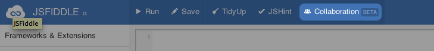
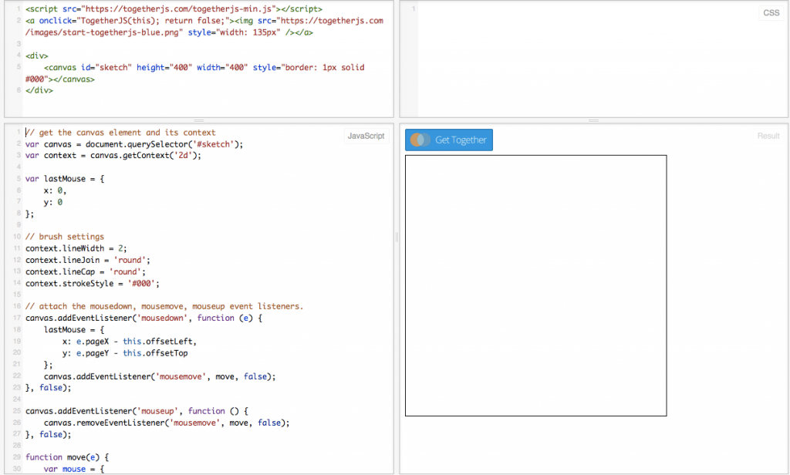

何謂 TogetherJS
本篇文章將介紹 Mozilla Labs 所提供的即時協作 (Real-time collaboration) 工具 ─ TogetherJS。
將 TogetherJS 添增至現有網站之後，即可加入即時合作功能。若有 2 名以上的使用者正在瀏覽網站或 Web App，則可看到彼此的滑鼠游標位置與點擊動作，另可互相追蹤瀏覽行為、一同編輯表單或觀看影片，並透過音訊或 WebRTC 的方式交談。
TogetherJS 的功能包含：
- 觀看他人的滑鼠游標與點擊動作
- 觀看捲動位置
- 觀看他人瀏覽的網頁
- 打字交談
- 以 WebRTC 進行語音對話
- 同步填寫表單 (寫入文字、勾選方塊等)
- 同步播放/暫停/追蹤影片
- 於單一網站上，可跨多個頁面保存工作階段 (Session)
整合方式
不需另外修改網站，即可發揮 TogetherJS 的多項功能。TogetherJS 將檢查文件物件模型 (Document Object Model，DOM) 而決定所應進行的作業 ─ 偵測表單欄位、偵測如 CodeMirror 與 Ace 的編輯器，並將其工具列置入你的網頁中。
如果你想玩玩看 TogetherJS，只要將下列指令碼加入你的網頁即可：
<script src="https://togetherjs.com/togetherjs.js"></script>
1
<script src="https://togetherjs.com/togetherjs.js"></script>
接著為使用者建立 1 組按鈕，即可開啟 TogetherJS：
<button id="collaborate" type="button">Collaborate</button>
<script>
document.getElementById("collaborate")
.addEventListener("click", TogetherJS, false);
</script>
12345
<button id="collaborate" type="button">Collaborate</button><script>document.getElementById("collaborate") .addEventListener("click", TogetherJS, false);</script>
如果你想直接體驗 TogetherJS 的功能，則 jsFiddle 也已納入 TogetherJS 供你參考：

只要點選「Collaboration」就會啟動 TogetherJS。接著將說明應如何在自己的 Fiddle 中使用 TogetherJS。
擴充自己的 App
TogetherJS 在檢查過 DOM 之後，即可決定所該進行的作業，但無法同步你的 JavaScript App。舉例來說，如果你的 App 有 1 份項目清單必須透過 JavaScript 更新，則該清單不會在使用者之間自動同步。大家有時會以為清單能自動更新，但就算我們跨 2 個網頁同步了 DOM，也還是無法同步底層的 JavaScript 物件。相較於 Firebase 或 Google Drive Realtime API 等產品，TogetherJS 並不具備即時的永久儲存功能。你的儲存與網站功能都由你自己決定，我們只會同步瀏覽器本身的工作狀態。
因為如此，如果你的 App 必須執行很多 JavaScript，就必須再加進額外程式碼以保持工作狀態的同步。而我們現正努力簡化此過程！
我們以簡單的繪圖 App 為例，並將之發佈作為 Fiddle 的完整範例隨你盡情把玩。

簡易的繪圖 App
我們先從簡單的繪圖 App 開始吧。先來個簡單的繪圖區 (canvas)：
<canvas id="sketch"
style="height: 400px; width: 400px; border: 1px solid #000">
</canvas>
123
<canvas id="sketch" style="height: 400px; width: 400px; border: 1px solid #000"></canvas>
接著完成某些設定：
// get the canvas element and its context
var canvas = document.querySelector('#sketch');
var context = canvas.getContext('2d');
// brush settings
context.lineWidth = 2;
context.lineJoin = 'round';
context.lineCap = 'round';
context.strokeStyle = '#000';
123456789
// get the canvas element and its contextvar canvas = document.querySelector('#sketch');var context = canvas.getContext('2d'); // brush settingscontext.lineWidth = 2;context.lineJoin = 'round';context.lineCap = 'round';context.strokeStyle = '#000';
我們在繪圖區上使用 mousedown 與 mouseup 事件，針對 mousemove 事件註冊我們的 move() 處理器：
var lastMouse = {
x: 0,
y: 0
};
// attach the mousedown, mousemove, mouseup event listeners.
canvas.addEventListener('mousedown', function (e) {
lastMouse = {
x: e.pageX - this.offsetLeft,
y: e.pageY - this.offsetTop
};
canvas.addEventListener('mousemove', move, false);
}, false);
canvas.addEventListener('mouseup', function () {
canvas.removeEventListener('mousemove', move, false);
}, false);
1234567891011121314151617
var lastMouse = { x: 0, y: 0}; // attach the mousedown, mousemove, mouseup event listeners.canvas.addEventListener('mousedown', function (e) { lastMouse = { x: e.pageX - this.offsetLeft, y: e.pageY - this.offsetTop }; canvas.addEventListener('mousemove', move, false);}, false); canvas.addEventListener('mouseup', function () { canvas.removeEventListener('mousemove', move, false);}, false);
接著 move() 函式將判斷所要描繪的線條：
function move(e) {
var mouse = {
x: e.pageX - this.offsetLeft,
y: e.pageY - this.offsetTop
};
draw(lastMouse, mouse);
lastMouse = mouse;
}
12345678
function move(e) { var mouse = { x: e.pageX - this.offsetLeft, y: e.pageY - this.offsetTop }; draw(lastMouse, mouse); lastMouse = mouse;}
最後就是描繪線條的函式：
function draw(start, end) {
context.beginPath();
context.moveTo(start.x, start.y);
context.lineTo(end.x, end.y);
context.closePath();
context.stroke();
}
1234567
function draw(start, end) { context.beginPath(); context.moveTo(start.x, start.y); context.lineTo(end.x, end.y); context.closePath(); context.stroke();}
上述這些程式碼就足以形成簡易的繪圖 App 了。此時只要在這個 App 上啟動 TogetherJS，就能看到其他人的滑鼠游標與點選動作，但還看不到別人的繪圖作品。
想知道怎麼修正這個問題嗎？可別錯過《TogetherJS 介紹 (下)》。
原文連結：https://hacks.mozilla.org/2013/10/introducing-togetherjs/